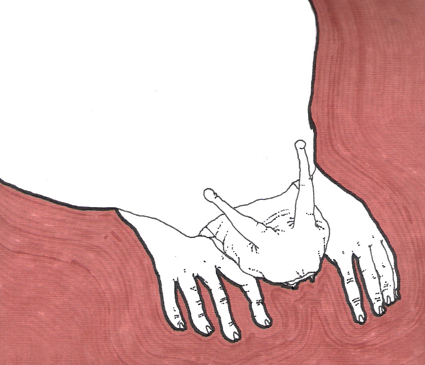

Carta a Freud

|
San José, 6 de Maio de 2012 Caro Sigmund, Como vão as coisas no Subsolo? Aqui tudo está muito emaranhado. Ultimamente as almas da pequena Capital do Eros, têm sido afetadas por todo tipo de catástrofes. Os muros da antiga Abadia chamada Catexia, têm perdido seu esplendor desde que o Mestre Libido partiu para terras desconhecidas. Nestes últimos tempos, os membros do Senado do Desejo têm perdido qualquer esperança de reencontrar as glorias do passado pela via diplomática e paralelamente, o contingente de nossas Forças Armadas do Prazer tem diminuído seu caudal de soldados. Não exagero se digo que ultimamente o Mal-estar da Cultura tem feito estragos na vida desta pequena região que fica no alto das montanhas da Psique. Não vejo a hora de encontrã-lo para contar-lhe todos os detalhes desta lamentãvel situação. Até então. Tenente-Coronel Anorgasmus |
San José, 6 de Mayo del 2012 Querido Sigmund, ¿Cómo van las cosas en el Subsuelo? Aquí todo está muy enmarañado. Últimamente las almas de la pequeña Capital del Eros, han sido afectadas por todo tipo de catástrofes. Los muros de la antigua Abadía llamada Catexia, han perdido su esplendor desde que el Maestro Libido partió para tierras desconocidas. En estos últimos tiempos, los miembros del Senado del Deseo han perdido cualquier esperanza de reencontrar las glorias del pasado por vía diplomática y paralelamente, el contingente de nuestras Fuerzas Armadas del Placer ha disminuido su caudal de soldados. No exagero si digo que últimamente el Malestar de la Cultura ha hecho estragos en la vida de esta pequeña región que queda en lo alto de las montañas de la Psique. No veo la hora de encontrarlo para contarle todos los detalles de esta lamentable situación. Hasta entonces. Teniente Coronel Anorgasmus |